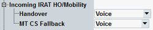

Incoming IRAT HO Mobility
The following section configures the connection types for incoming inter-RAT traffic.

Configuration of incoming handover
Selects the connection type to be used for an inter-RAT incoming handover in the WCDMA signaling as a handover destination.
"Data end to end" is only visible if "Enable Data end to end" is enabled.
Remote command:Selects the connection type to be used for an inter-RAT incoming mobile terminated CS fallback.
Remote command: